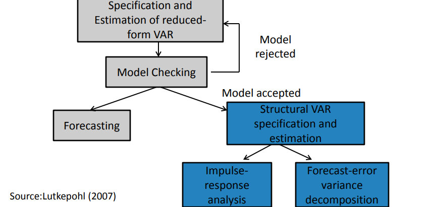
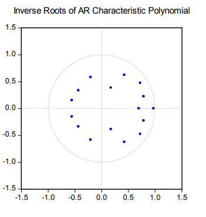

Structural VAR Part 1
Introduction
Del Negro and Schorfheide (2011):
At first glance, VARs appear to be straightforward multivariate generalizations of univariate autoregressive models. At second sight, they turn out to be one of the key empirical tools in modern macroeconomics.
What are VARs ?
- multivariate linear time-series models
- endogenous variable in the system are functions of lagged values of all endogenous variables
- simple and flexible alternative to the traditional multiple-equations models
Historical Overview : Sims’ Critique
In the 1980s criticized the large-scale macro-econometric models of the time
Proposed VARs as an alternative that allowed one to model macroeconomic data informatively
What Are VARs Used For?
Forecasting
Reduced Form VARs
Strucutural Analysis
Structural VARs
Unit Plan/Roadmap

Estimation of VARs
Introduction to VARs
- Let \(y_t\) be a vector with the value of \(n\) variables at time t:
\(y_t=[y_{1,t} y_{2,t} . . . y_{n,t}]'\)
- A p-order vector autoregressive process generalize a one-variable AR(p) process to n variables:
\(y_t=G_0+G_1y_{t-1}+G_2y_{t-2}+...+G_py_{t-p}+e_t\) Reduced Form VAR
\(G_0=(n.1)\) vector of constraints \(G_0=(n.n)\) vector of coefficients \(e_t=(n.1)\) vector of white noise innovations
\(E[e_t]=0\)
\(E[e_t e_{\tau}'= \Omega , if t=\tau \\ 0 otherwise\)
Example : A VAR(1) in 2 Variables
\(y_{1,t}=g_{11}y_{1,t-1}+g_{12}y_{2,t-1}+e_{1,t}\)
\(y_{2,t}=g_{21}y_{1,t-1}+g_{22}y_{2,t-1}+e_{2,t}\)
\(y_t=G_ty_{t-1}+e_t\) where \[y_t=\begin{bmatrix} y_{1,t} \\ y_{2,t} \end{bmatrix}\] \[y_t=\begin{bmatrix} \pi_t \\ gdp_t \end{bmatrix}\]
\[G_t=\begin{bmatrix} g11 & g12 \\ g21 & g22 \\ \end{bmatrix}\]
\[G_t=\begin{bmatrix} e_{1,t} \\ e_{2,t} \end{bmatrix}\], Assumptions about the error terms: \[E[e_te_t']=\begin{bmatrix} 0 & 0\\ 0 & 0 \\ \end{bmatrix}=\Omega, for t\neq\tau\] \[E[e_te_t']=\begin{bmatrix} \sigma_{e1}^2 & \sigma_{e1e2}\\ \sigma_{e1e2} & \sigma_{e2}^2 \\ \end{bmatrix}=\Omega\]
Estimation: by OLS
Performed with OLS applied equation by equation
Estimates are:
- consistent
- efficient
- equivalent to GLS
General Specifications Choices
- Selection of variables to be included: in accordance with economic theory, empirical evidence and/or experience
- Exogenous variables can be included: constant, time trends, other additional explanators
- Non-stationary level data is often transformed (log levels, log differences, growth rates, etc.)
- The model should be parsimonious
Stationary VARs
Stationarity of a VAR : Definition
A p-th order VAR is said to be covariance-stationary if :
- The expected value of \(y_t\) does not depend on timed
\[E[Y_t]=E[Y_{t+j}]=\mu=\begin{bmatrix} \mu_1 \\ \mu_2 \\ \dots \\ \mu_n \end{bmatrix}\] 2. The covariance matrix of \(y_t\) and \(y_{t+j}\) depends on the time lapsed between j and not not the reference period t
\[E[(y_t-\mu)(y_{t+j}-\mu)']=E[(y_s-\mu)(y_{s+j}-\mu)']=\Gamma_j\]
Condions for Sationarity
The conditioins for a VAR to be stationary are similar to the conditions for a univariate AR process to be stationary: \(y_t=G_0+G_1y_{t-1}+G_2 y_{t-2}+\dots+G_py_{t-p}+e_t\)
\((I_n-G_1L-G_2L^2-\dots-G_pL^p)y_t=G_0+e_t\)
\(G(L)y_t=G_0+e_t\) For \(y_t\) to be stationary, the matrix polynomial in the lag operator \(G(L)\) must be invertible.
Conditions for Stationarity
A VAR(p) process is stationary (thus) - A VAR(p) if all the np roots of the characteristic polynomial are (in modulus) outside the unit imaginary
\(det(I_n-G_1L-G_2L^2-\dots-G_pL^p)=0\)
Softwares sometimes inverse roots of the characteristic AR polynomial, which should then lie within the unit imaginary circle.

Vector Moving Average Representation of a VAR
- If a VAR is stationary, the \(y_t\) vector can be expressed as a sum of all of the past white noise shocks \(e_t\) (VMA(∞) representation \(y_t=\mu+G(L)^{-1}e_t\), where \(\mu=G(L)^{-1}G_0\) \(y_t=\mu+(I_n+\Psi_1L+\Psi L^2+\dots)e_t\) \(y_t=\mu+e_t+\Psi e_{t-1}+\Psi e_{t-2}+\dots\)
\(y_t=\mu+\sum_{i=1}^{n} \Psi_i e_{t-i}\)
- where \(\Psi_i\) is a (n x n) matrix of coefficients, and \(\Psi_0\) is the identity matrix.
- From the VMA(\(\infty\)) it is possible to obtain IRF
Lag Specification Criteria
Lags Needed for the VAR
What number is most appropriate? …
- If p is extremely short, the model may be poorly specified
- If p is extremely long, too many degrees of freedom will be lost
- The number of lags should be sufficient for the residuals from the estimation to constitute individual white noises
The Curse of Dimensionality
VARs are very densely parameterized
- In a VAR(p) we have p matrices of dimension nxn : \(G_1, ...,G_p\)
- Assume \(G_0\) is an intercept vector (dimension: nx1)
- The number of total coefficients/parameters to be estimated as : \([n+n.n.p=n(1+np)]\){style=“color:red;”}
Overfitting versus Omitted Variable Bias
Over-fitting: poor-quality estimates and bad forecasts
Omitted variable bias: poor-quality estimates and bad forecasts
Possible solutions:
- Core VAR plues rotating variables
- Bayesian Analysis
Lag Selection Criteria
- As for univariate models, one can use multidimensional versions of
- AIC, BIC, HQ, etc.
- Information-based criteria : trade-off between goodness of fit (reduction in Sum of Squares) and parsimony
Lag Specification: Practitioner’s Advice
- p=4 when working with quarterly data
- p=12 with monthly data
- The effective constraint is np<T/3
- Example: T=100, \(n le 7\), p=4
Forecasting using VARs
Forecasting using the Estimated VAR
- Let \(Y_{t-1}\) be a matrix containing all information available up to time t (before realization of \(e_t\) are known)
- Then: \(E[y_t/Y_{t-1}]=G_0+G_1y_{t-1}+G_2y_{t-2}+\dots+G_py_{t-p}\)
The forecast error can be decomposed into the sum of et , the unexpected innovation of yt , and the coefficient estimation error:
\(y_t-E[y_t/Y_{t-1}]=e_t+V(Y_{t-1}])\)
- If the estimator of the coefficients is consistent and estimates, are based on many data observations, the coefficient estimation error tends to be small, and :
\(Y_t-E[y_t/Y_{t-1}]≅e_t\)
Iterated Forecasts
Iterating one period forward: \(E[y_{t+1}/Y_{t-1}]=G_0+G_1E[y_t|y_{t-1}]+G_2y_{t-2}+\dots+G_py_{t-p+1}\)
Iterating j periods forward: \(E[y_{t+j}/Y_{t-1}]=G_0+G_1E[y_{t+j-1}|y_{t-1}]+G_2E[y_{t+j-2}|y_{t-1}+\\\dots+G_py_{t-p+1}\)